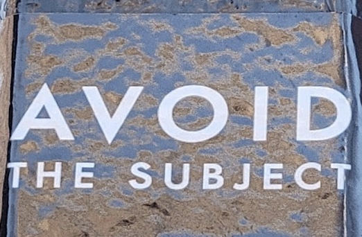

A MANIFESTO for mapping negative space
a Manifesto is a declaration.
you navigated to this page and are reading these words because I declared the document in which they are written
to be html.
the Manifesto of this Manifesto is: <DOCTYPE html>.
(right click here and choose "inspect" to see what i mean!)
a document's declaration allows a web browser (like google chrome, apple safari, or mozilla firefox) to read its
contents and display it according to the rules of its language. if not for <DOCTYPE html>, what you are reading would
not exist.
just as a document declaration makes my html file legible to a web browser, my Manifesto For Mapping Negative
Space provides me, the web (and urban) flâneur, a language with which to communicate my ideas. it articulates a
framework which brings form to an otherwise indefinite concept.
in what follows I provide directive, though no direction. wander and wonder as you will. after all, thats how
this counter-cartography began.

a sticker on a lamppost in gastown offers the first rule for mapping negative space:
AVOID THE SUBJECT.
negative space is a concept that, in art, refers to space surrounding the subject––space that is necessary in
order for the subject to exist but which is not the intended focus of attention.
take a map of vancouver that serves navigational purposes, like google maps or the paper ones you can take for
free at waterfront station. the subject of these maps are roads, followed by differently-shaded polygons which
signify the buildings, green space, and water which (according to the map) make up the city. if roads are the
subject then alleyways are relegated to negative space. to render vancouver by mapping its alleyways is to avoid
the subject, shifting focus to spaces in-between and in so doing, creating a counter-cartography of and for new
navigations.
SLOW DOWN
Day to day we use maps to find our way about. We use digital maps to find out when the next bus is coming and how long it will take me to get
where we are to where we are going. But if there were no destination, what would the journey be like?
slow scholarship link
pedagogy link
INTERFERE CONSTRUCTIVELY
EMBRACE DISORIENTATION
BUILD FOR THE LOVELY UNEXPECTED (from ra)
why i use github - working from both sides. also commits transpa
rent. not using constraiints of platnform.
evolve. no currated way to move through space. engage with repository!!! HERE
theorize negative space, conceptualize a lost poem
map here as proof of concept - intent to develop framework/ideas for deep mapping
other manifestos!
-RA
-slow scholarship/science
VNS bitch mutant
billy ray belcourt
art at the end of the world - research creation
feminist manifestno
A Guidebook
of
AlternAtive
nows
https://labo.zone/?lang=en#menu-en